用「情绪」而不是「功能」重新组织人与车的关系。
随着自动驾驶技术的发展，驾驶行为逐渐减少，驾驶者的双手从方向盘中被解放出来。然而，在没有明确操作任务的情况下，双手「无处安放」，长时间悬空或随意放置容易引发疲劳与不适，现有座舱设计在交互与舒适性方面尚未充分解决这一问题。
「如何在自动驾驶状态下，为驾驶者的双手提供自然的支撑与舒适的触觉体验，同时在不依赖视觉与听觉的情况下，保持人与车辆、环境之间的有效连接，缓解疲劳并调节情绪状态。」
As autonomous driving technology advances, driving behaviors gradually decrease, and drivers' hands are freed from the steering wheel. However, without clear operational tasks, hands have "nowhere to rest" — prolonged hovering or casual placement can easily lead to fatigue and discomfort. Current cockpit designs have not fully addressed this issue in terms of interaction and comfort. "How to provide natural support and a comfortable tactile experience for the driver's hands during autonomous driving, while maintaining an effective connection between the human, the vehicle, and the environment — without relying on vision or hearing — to alleviate fatigue and regulate emotional states."
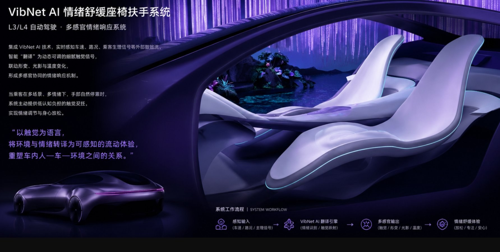
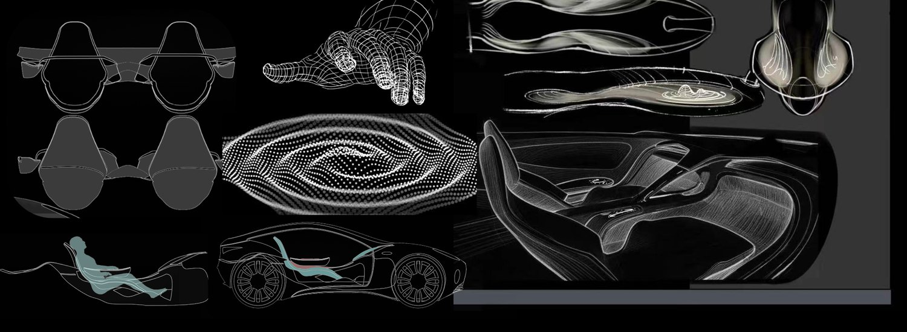
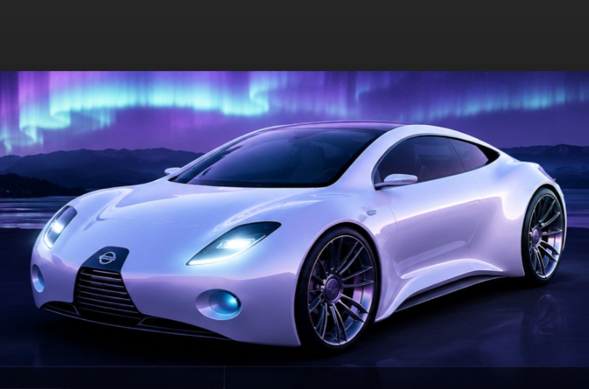
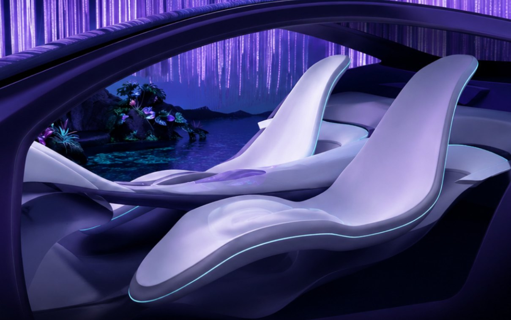
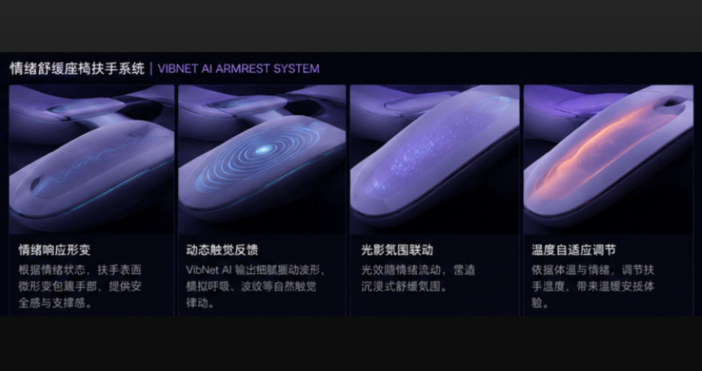
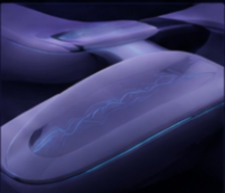
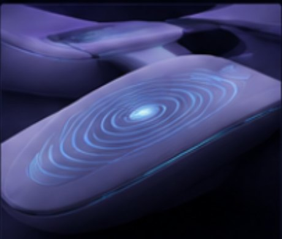
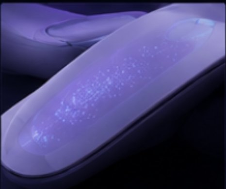
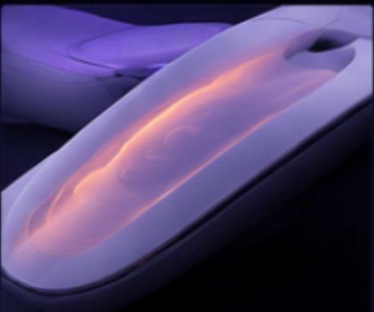
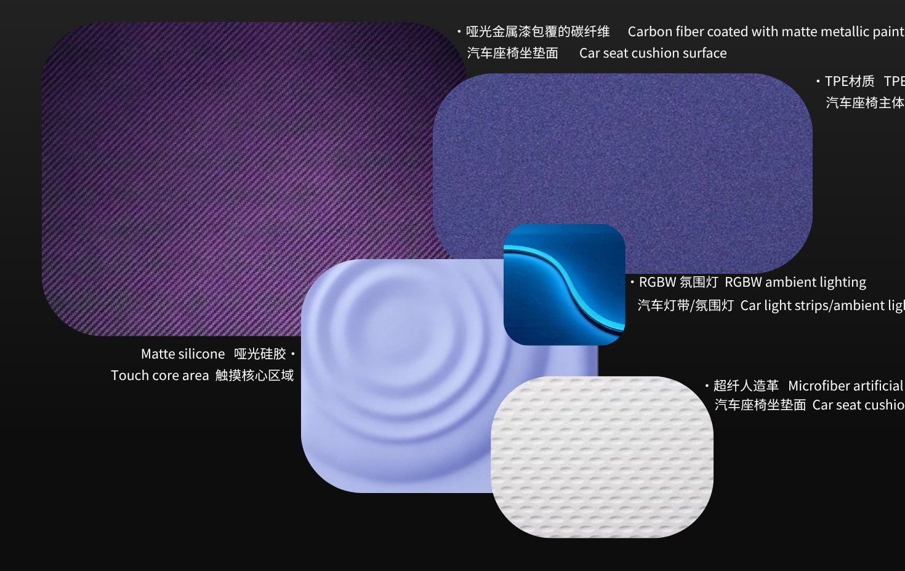
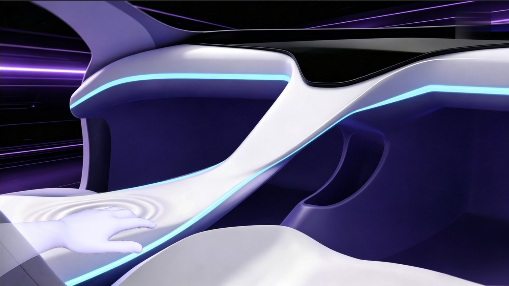
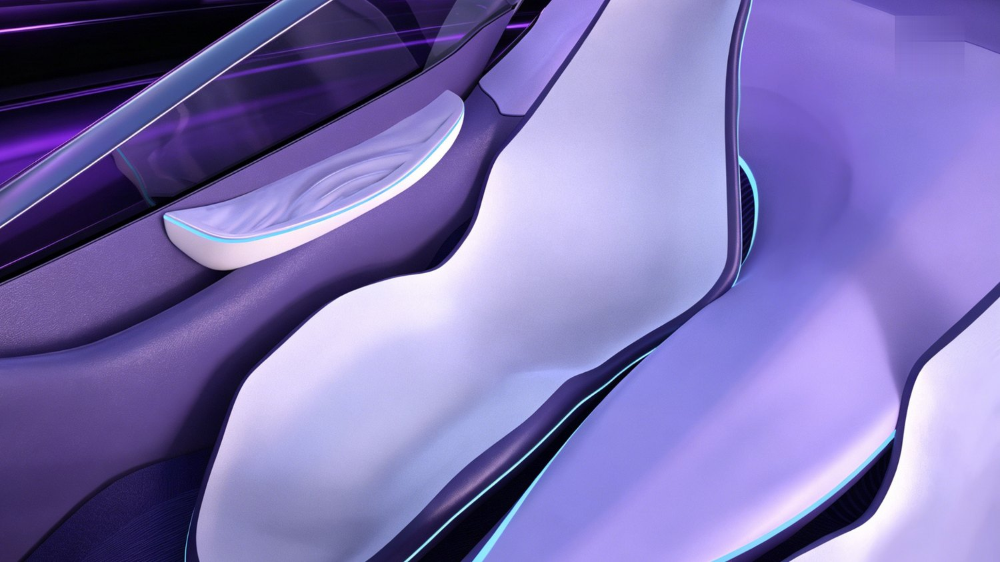